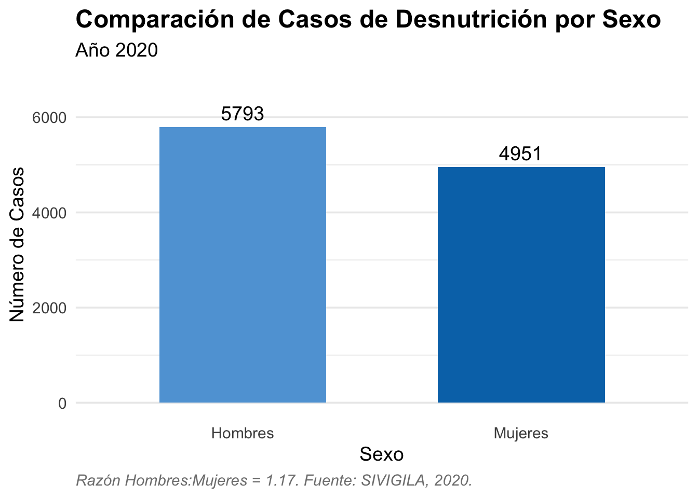
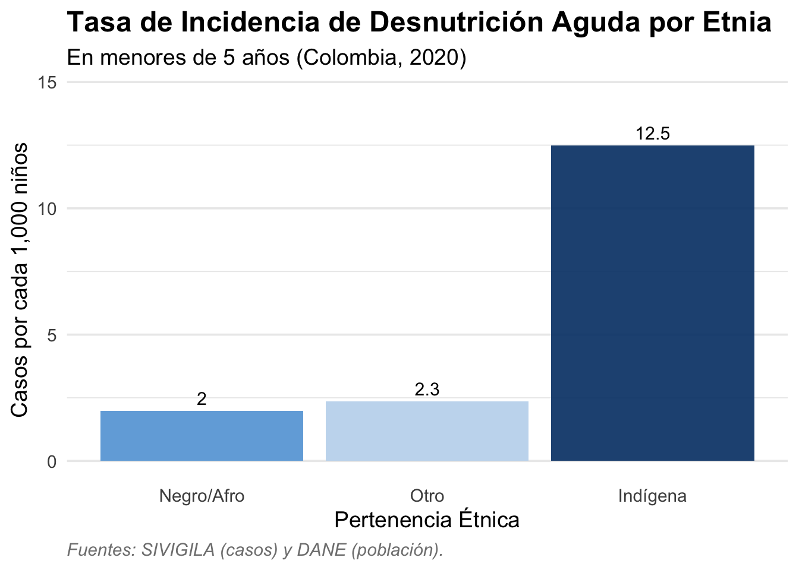
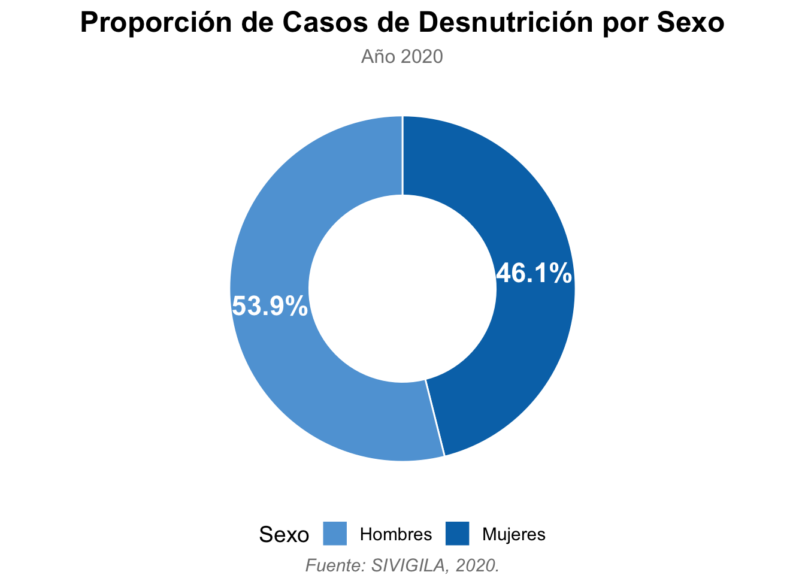

| Sexo | Número de Casos |
|---|---|
| Mujeres | 4951 |
| Hombres | 5793 |
3 Medidas de Frecuencias
3.1 Cálculo de la Razón Hombre:Mujer
La razón es una medida de frecuencia que compara dos cantidades que no se contienen entre sí. En este caso, comparamos el número de casos de desnutrición en hombres con el número de casos en mujeres.
- Paso 1: Identificar los datos necesarios
Primero, obtenemos el conteo de casos para cada grupo de la base de datos.

- Paso 2: Definir la fórmula matemática
La fórmula para calcular la razón es un simple cociente entre los dos grupos que queremos comparar.
\[\text{Razón} = \frac{\text{Número de casos en Hombres}}{\text{Número de casos en Mujeres}}\]
- Paso 3: Realizar el cálculo
Sustituimos los valores de los casos en la fórmula.
\[\text{Razón} = \frac{5,793}{4,951} \approx 1.17\]
Esto significa que por cada caso de desnutrición en una mujer, hay 1.17 casos en hombres, lo que confirma que la condición fue más frecuente en el sexo masculino en esta población.
3.2 Tasa
3.2.1 Cálculo de tasa de insidencia
3.2.1.1 Cálculo de la Tasa de Incidencia (Menores de 5 años)
La tasa de incidencia mide el riesgo de que ocurra un evento (en este caso, desnutrición aguda) en una población específica durante un período determinado. Es la medida más importante para entender la velocidad con la que aparecen nuevos casos.
- Paso 1: Identificar los datos necesarios
Para este cálculo, necesitamos un numerador (los casos) y un denominador (la población en riesgo).
Número de casos en menores de 5 años: 10.744 Fuentes SIVIGILA(1).
Población total de menores de 5 años en Colombia: 3.853.223 Fuente: DANE, Proyecciones de la Población 2020(2).
Paso 2: Definir la fórmula matemática
La fórmula para la tasa de incidencia es:
\[\text{Tasa de Incidencia} = \frac{\text{Número de Casos Nuevos}}{\text{Población en Riesgo}} \times \text{Factor Multiplicador}\] Para este análisis, usaremos un factor multiplicador de 1,000 para interpretar el resultado como “casos por cada 1,000 niños”.
- Paso 3: Realizar el cálculo
Sustituimos los valores en la fórmula:
\[\text{Tasa de Incidencia} = \frac{10,744}{3,853,223} \times 1,000 \approx 2.79\]
- Paso 4: Interpretación del resultado
El resultado final es 2.79.
Esto significa que, durante el año 2020, en Colombia se presentaron 2.79 casos nuevos de desnutrición aguda por cada 1,000 niños menores de 5 años.

3.3 Proporción
3.3.1 Cálculo de la Proporción de Casos por Sexo
La proporción es una medida de frecuencia que muestra qué parte del total de casos corresponde a una categoría específica. Se expresa comúnmente como un porcentaje.
- Paso 1: Identificar los datos necesarios
Primero, obtenemos el conteo de casos para cada sexo y el total de casos de la base de datos.
Número de casos en Hombres: 5,793
Número de casos en Mujeres: 4,951
Total de Casos: 5,793 + 4,951 = 10,744
Fuentes SIVIGILA(1).
- Paso 2: Definir la fórmula matemática
La fórmula para calcular la proporción de una categoría es:
\[\text{Proporción} = \frac{\text{Número de casos en la categoría}}{\text{Número Total de Casos}} \times 100\%\] - Paso 3: Realizar el cálculo para cada sexo
Sustituimos los valores en la fórmula para cada categoría.
- Proporción en Hombres:
\[\text{Proporción}_{\text{Hombres}} = \frac{5,793}{10,744} \times 100\% \approx 53.9\%\]
Proporción en Mujeres: \[\text{Proporción}_{\text{Mujeres}} = \frac{4,951}{10,744} \times 100\% \approx 46.1\%\]
Paso 4: Interpretación del resultado
Los resultados finales son 53.9% para hombres y 46.1% para mujeres.
Esto significa que, del total de casos de desnutrición reportados en 2020, el 53.9% correspondieron a hombres y el 46.1% a mujeres, mostrando una mayor proporción de casos en el sexo masculino.
| Tabla 2: Proporción de Casos de Desnutrición por Sexo | ||
|---|---|---|
| Sexo | Número de Casos | Porcentaje del Total |
| Mujeres | 4951 | 46.1% |
| Hombres | 5793 | 53.9% |
| Fuente: SIVIGILA, 2020. | ||
